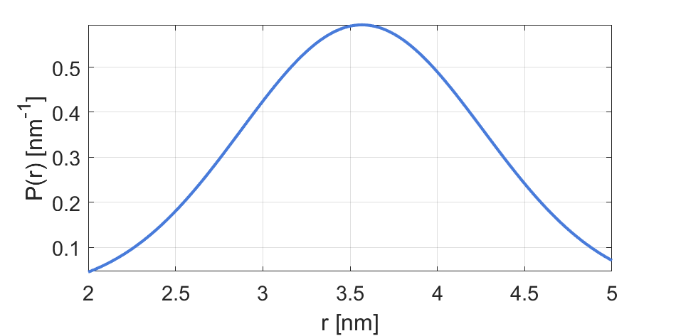

dd_onerice¶
Rician distribution parametric model
Syntax¶
info = dd_onerice()
P = dd_onerice(r,param)
- Parameters
r- Distance axis (N-array)param- Model parameters
- Returns
P- Distance distribution (N-array)info- Model information (struct)
Model¶

where  and
and  is the modified Bessel function of the first kind with order
is the modified Bessel function of the first kind with order  . This is a three-dimensional non-central chi distribution, the 3D generalization of the 2D Rice distribution.
. This is a three-dimensional non-central chi distribution, the 3D generalization of the 2D Rice distribution.
| Variable | Symbol | Default | Lower bound | Upper bound | Description |
|---|---|---|---|---|---|
param(1) |
 |
3.5 | 1.0 | 10 | Mean distance |
param(2) |
 |
0.7 | 0.1 | 5 | Standard deviation |
Example using default parameters:
{kind=link}
Description¶
info = dd_onerice()
Returns an info structure containing the specifics of the model:
info.model- Full name of the parametric model.info.nparam- Total number of adjustable parameters.info.parameters- Structure array with information on individual parameters.
P = dd_onerice(r,param)
Computes the distance distribution model P from the axis r according to the parameters array param. The required parameters can also be found in the info structure.